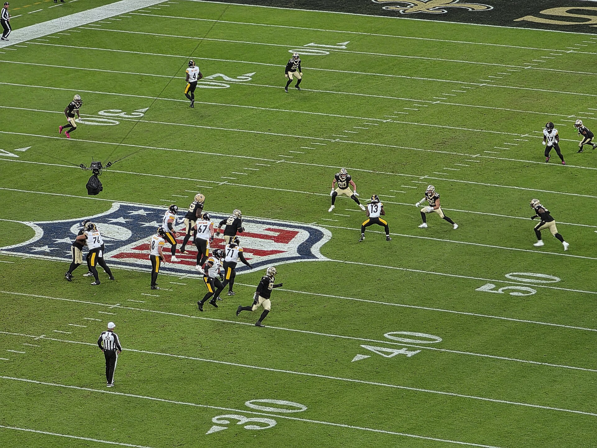

A Semana 7 da NFL 2026 provocou uma mudança importante no cenário da temporada regular. Kansas City Chiefs e San Francisco 49ers sofreram suas primeiras derrotas, deixando o Minnesota Vikings como a única equipe invicta da competição. A rodada, disputada entre 22 e 26 de outubro, reuniu 14 partidas e movimentou a disputa pelas lideranças divisionais das conferências AFC e NFC.
O resultado mais surpreendente aconteceu em Seattle. Os Seahawks dominaram o Kansas City Chiefs e venceram por 20 a 3, encerrando a sequência perfeita da equipe de Patrick Mahomes. Em Atlanta, o Falcons derrotou o San Francisco 49ers por 29 a 20, impedindo que a franquia californiana alcançasse sua sétima vitória consecutiva.
Enquanto dois favoritos perderam a invencibilidade, Minnesota confirmou sua força. Os Vikings derrotaram o Indianapolis Colts e chegaram à campanha de seis vitórias e nenhuma derrota, assumindo isoladamente a condição de único time ainda sem derrotas na NFL 2026.
O cenário representa uma mudança significativa em relação à Semana 6, quando Chiefs, 49ers e Vikings ainda sustentavam campanhas perfeitas. Agora, a oitava rodada terá confrontos divisionais importantes que podem movimentar ainda mais a temporada regular.
O único invicto da NFL 2026
O Minnesota Vikings saiu da Semana 7 como o grande beneficiado pela combinação de resultados. A equipe venceu o Indianapolis Colts por 16 a 10 no U.S. Bank Stadium e chegou à sexta vitória em seis partidas.
O triunfo, entretanto, não foi fácil.
Indianapolis conseguiu levar a vantagem de 10 a 6 para o último quarto. A defesa dos Colts dificultou a produção ofensiva de Minnesota, obrigando os donos da casa a buscar alternativas para conquistar a vitória.
A reação aconteceu com Kyler Murray, que protagonizou uma corrida importante até a linha de cinco jardas adversária. Na jogada seguinte, o quarterback encontrou T.J. Hockenson para o touchdown que colocou os Vikings à frente.
A defesa voltou a ser determinante. Blake Cashman terminou com 12 tackles e dois sacks, enquanto Harrison Smith conseguiu uma interceptação importante sobre Daniel Jones nos minutos finais.
Minnesota não permitiu pontos aos Colts durante o segundo tempo e limitou o adversário a apenas 64 jardas aéreas líquidas na partida.
Com o resultado, os Vikings chegaram a 125 pontos marcados e apenas 74 sofridos em seis jogos, estabelecendo saldo positivo de 51 pontos.
A equipe lidera a NFC North, mas terá um desafio de grande importância na Semana 8: enfrentará o Detroit Lions fora de casa, em um confronto divisional que colocará sua invencibilidade novamente à prova.
Seattle Seahawks encerra invencibilidade do Chiefs
O Sunday Night Football apresentou uma das maiores surpresas da temporada.
O Seahawks derrotou o Kansas City Chiefs por 20 a 3 no Lumen Field, em Seattle, e encerrou a sequência de cinco vitórias da equipe comandada por Patrick Mahomes.
O resultado chamou atenção não apenas pela derrota dos Chiefs, mas pela dificuldade ofensiva apresentada pela equipe.
Mahomes completou 19 de 33 passes para 165 jardas, sem touchdowns e com uma interceptação. O quarterback encontrou poucos espaços contra a defesa adversária, e os Chiefs terminaram a partida sem conseguir entrar na end zone.
Kenneth Walker III, que havia sido um dos principais protagonistas da vitória sobre os Chargers na Semana 6, também encontrou dificuldades. O running back terminou com apenas 36 jardas em 14 corridas.
Do outro lado, Seattle apresentou uma atuação muito mais consistente.
Sam Darnold completou 20 de 28 passes para 257 jardas, um touchdown e uma interceptação. O quarterback conseguiu manter campanhas ofensivas prolongadas e aproveitou melhor as oportunidades para movimentar a equipe.
Jaxon Smith-Njigba foi um dos principais destaques, com nove recepções, 150 jardas e um touchdown. Emanuel Wilson também teve participação decisiva, acumulando 100 jardas terrestres em 24 corridas e marcando um touchdown.
A defesa de Seattle completou o trabalho, impedindo Kansas City de desenvolver seu jogo ofensivo habitual.
Com a vitória, os Seahawks chegaram à campanha de 4-3 e continuam perseguindo San Francisco na NFC West.
Kansas City caiu para 5-1, mas permanece na liderança da AFC West. A equipe terá pouco espaço para outra atuação semelhante, especialmente porque enfrentará o Denver Broncos, que também possui cinco vitórias, na Semana 8.
Atlanta Falcons surpreende o 49ers
A outra grande quebra de invencibilidade aconteceu no Mercedes-Benz Stadium.
O Atlanta Falcons venceu o San Francisco 49ers por 29 a 20 e encerrou uma sequência de seis vitórias consecutivas da franquia californiana.
San Francisco começou melhor e chegou a abrir 14 a 3 no segundo quarto. Mas, o Atlanta conseguiu modificar completamente o ritmo da partida.
Michael Penix Jr. foi um dos principais responsáveis pela recuperação. O quarterback completou 25 de 34 passes para 213 jardas e três touchdowns, sem sofrer interceptações.
O desempenho foi complementado pela defesa dos Falcons, que forçou quatro turnovers e conseguiu impedir que San Francisco mantivesse sua vantagem.
Um dos momentos decisivos aconteceu no começo do segundo tempo. Depois de terminar a primeira metade perdendo por 14 a 12, Atlanta construiu uma campanha ofensiva encerrada com passe de cinco jardas de Penix para Kyle Pitts.
O touchdown colocou os Falcons na liderança por 19 a 14.
Atlanta ampliou a vantagem no último quarto e conseguiu controlar a tentativa de reação dos 49ers. Kendal Daniels participou diretamente do fechamento da partida ao interceptar Brock Purdy em um momento importante.
Purdy terminou com 288 jardas aéreas, um touchdown e duas interceptações.
A derrota colocou San Francisco com campanha de 6-1. Apesar do tropeço, a equipe continua na liderança da NFC West e mantém uma das melhores campanhas da conferência.
Atlanta chegou a 3-4, resultado que devolveu a equipe à disputa por posições na NFC South.
Para os 49ers, a Semana 8 será de descanso. Já os Falcons enfrentarão o Tampa Bay Buccaneers em um confronto divisional importante.
Cincinnati Bengals vence após reação histórica
A disputa da AFC North ganhou ainda mais equilíbrio depois da vitória do Cincinnati Bengals sobre o Baltimore Ravens por 35 a 13.
O resultado foi especialmente impressionante pela maneira como a partida se desenvolveu.
Baltimore terminou o primeiro tempo vencendo por 13 a 0 e parecia encaminhar uma vitória importante dentro de casa.
Porém, o Cincinnati dominou completamente o segundo tempo.
Joe Burrow comandou uma reação ofensiva que produziu 35 pontos consecutivos sem resposta dos Ravens. O quarterback terminou com 292 jardas aéreas e quatro passes para touchdown, todos depois do intervalo.
Tee Higgins foi um dos principais alvos, acumulando 148 jardas em seis recepções e um touchdown. Ja'Marr Chase, Mike Gesicki e Drew Sample também receberam passes para touchdown. Samaje Perine contribuiu com uma corrida para a end zone, ampliando a vantagem dos Bengals.
A defesa também teve participação fundamental, impedindo que Baltimore marcasse pontos durante toda a segunda metade da partida.
Com o resultado, Cincinnati chegou a quatro vitórias e duas derrotas, aproximando-se das primeiras posições da AFC North.
Baltimore caiu para 4-3 e sofreu a segunda derrota consecutiva, depois de perder para Cleveland na rodada anterior.
Pittsburgh Steelers vence em Paris
A Semana 7 também marcou a estreia da França como sede de uma partida de temporada regular da NFL.
No Stade de France, em Saint-Denis, o Pittsburgh Steelers derrotou o New Orleans Saints por 16 a 10.
Aaron Rodgers terminou com um touchdown e mais de 200 jardas aéreas, participando diretamente da terceira vitória consecutiva dos Steelers.
O passe para touchdown foi recebido por Darnell Washington e teve significado histórico para a carreira do quarterback.
Rodgers alcançou 540 passes para touchdown na carreira, ultrapassando Peyton Manning e assumindo a terceira posição na lista histórica da NFL.
Jaylen Warren também foi importante para a vitória, acumulando 101 jardas terrestres em 18 corridas.
Defensivamente, Payton Wilson conseguiu uma interceptação decisiva durante o terceiro quarto, interrompendo uma campanha de New Orleans que ameaçava modificar o placar.
A vitória levou Pittsburgh à campanha de 5-2, mantendo a franquia empatada com Cleveland no número de vitórias.
Já os Saints caíram para 2-5 e continuam enfrentando dificuldades na NFC South.
O resultado também aumentou a expectativa para o confronto entre Steelers e Browns na Semana 8, um duelo direto entre equipes que dividem as primeiras posições da AFC North.
Vitória novamente nos segundos finais
O Cleveland Browns conquistou outra vitória dramática e permaneceu na liderança da AFC North.
A equipe derrotou o Tennessee Titans por 27 a 24, com um field goal de 32 jardas convertido por Andre Szmyt quando o relógio chegou a zero.
Tennessee começou melhor e abriu 14 a 0 no primeiro quarto, aproveitando duas corridas para touchdown de Tony Pollard.
Mas, o Cleveland conseguiu reagir.
Quinshon Judkins marcou dois touchdowns terrestres e ajudou os Browns a chegar ao intervalo vencendo por 17 a 14.
No segundo tempo, a partida permaneceu equilibrada. Deshaun Watson conseguiu ampliar a vantagem de Cleveland com um touchdown terrestre no último quarto, mas Tennessee empatou em 24 a 24 com outro touchdown de Pollard.
Restando menos de um minuto, Watson conduziu a campanha decisiva.
O quarterback terminou o confronto com 308 jardas aéreas, enquanto KC Concepcion Jr. contribuiu com oito recepções e 129 jardas. O field goal de Szmyt garantiu a quinta vitória dos Browns na temporada.
Com campanha de 5-2, Cleveland terá pela frente o Pittsburgh Steelers, também com cinco vitórias. O confronto poderá provocar uma mudança direta na liderança da divisão.
Field goal no último segundo
O Detroit Lions conquistou uma vitória importante na NFC North ao superar o Green Bay Packers por 20 a 17 no Ford Field.
A partida também foi decidida nos últimos instantes, quando Jake Bates converteu um field goal de 22 jardas para garantir o triunfo dos donos da casa.
Jared Goff conduziu o ataque de Detroit, encontrando Jameson Williams para dois touchdowns. Williams terminou com cinco recepções e 91 jardas, enquanto Amon-Ra St. Brown foi outro destaque ofensivo, acumulando nove recepções e 153 jardas.
Jahmyr Gibbs também contribuiu com 116 jardas terrestres em 29 corridas.
A vitória colocou os Lions com campanha de 4-2 e aumentou a pressão sobre Green Bay, que passou a ter quatro vitórias e três derrotas.
O confronto foi particularmente importante porque Detroit terá outro duelo divisional na Semana 8.
A equipe receberá o Minnesota Vikings, único invicto da NFL, enquanto Green Bay enfrentará o Carolina Panthers.
Para os Lions, vencer Minnesota representaria a oportunidade de diminuir a distância para o líder da NFC North e movimentar ainda mais a classificação da divisão.
Dallas Cowboys aprofunda crise de Philadelphia
O encerramento da Semana 7 teve vitória convincente do Dallas Cowboys sobre o Philadelphia Eagles por 38 a 21.
O Monday Night Football colocou frente a frente duas equipes pressionadas pelas derrotas recentes e que precisavam reagir na NFC East.
Dallas conseguiu apresentar maior eficiência ofensiva e conquistou sua terceira vitória na temporada.
Dak Prescott completou 15 de 27 passes para 212 jardas e três touchdowns, sem interceptações. CeeDee Lamb recebeu dois passes para touchdown, enquanto George Pickens anotou o terceiro.
O jogo terrestre também foi importante para os Cowboys. Javonte Williams acumulou 155 jardas em corridas, ajudando Dallas a manter o controle ofensivo.
Philadelphia, por outro lado, sofreu sua quinta derrota consecutiva.
Depois de começar a temporada com duas vitórias, os Eagles perderam cinco partidas seguidas e chegaram à campanha de 2-5.
O resultado aumentou a distância em relação ao New York Giants, que lidera a NFC East.
Dallas passou a ter campanha de 3-4 e terá pela frente o Arizona Cardinals na Semana 8.
Os Eagles enfrentarão o Washington Commanders fora de casa, em outro compromisso divisional que terá importância significativa para a tentativa de recuperação da equipe.
Outros destaques da Semana 7
A rodada também apresentou resultados expressivos em confrontos de equipes que tentam recuperar terreno nas divisões.
O Chicago Bears abriu a semana com vitória por 30 a 24 sobre o New England Patriots. O resultado levou Chicago à campanha de 5-2 e manteve a equipe próxima do Minnesota Vikings na NFC North.
O Tampa Bay Buccaneers conquistou sua segunda vitória da temporada ao derrotar o Carolina Panthers por 43 a 13. A goleada movimentou a NFC South, divisão que apresenta campanhas próximas e ainda não possui uma equipe com ampla vantagem.
O New York Giants venceu o Houston Texans por 27 a 21 na prorrogação. Devin Singletary marcou o touchdown decisivo e ajudou os Giants a chegar à campanha de 4-2-1, preservando a liderança da NFC East.
O Miami Dolphins finalmente conseguiu sua primeira vitória ao superar o New York Jets por 28 a 25. O resultado encerrou a sequência de cinco derrotas de Miami, que passou a ter campanha de 1-5.
O Denver Broncos derrotou o Arizona Cardinals por 30 a 16 e chegou à quinta vitória. A equipe agora possui campanha de 5-2, mantendo a pressão sobre Kansas City na AFC West.
O Los Angeles Rams venceu o Las Vegas Raiders por 35 a 21 e encerrou uma sequência de derrotas, passando a ter três vitórias e quatro derrotas. Os Raiders ficaram com a mesma campanha e precisam reagir depois de quatro derrotas consecutivas.
Todos os resultados da NFL Semana 7:
- Chicago Bears 30 x 24 New England Patriots
- Pittsburgh Steelers 16 x 10 New Orleans Saints
- Atlanta Falcons 29 x 20 San Francisco 49ers
- Cincinnati Bengals 35 x 13 Baltimore Ravens
- Tampa Bay Buccaneers 43 x 13 Carolina Panthers
- New York Giants 27 x 21 Houston Texans — prorrogação
- Minnesota Vikings 16 x 10 Indianapolis Colts
- Miami Dolphins 28 x 25 New York Jets
- Cleveland Browns 27 x 24 Tennessee Titans
- Denver Broncos 30 x 16 Arizona Cardinals
- Detroit Lions 20 x 17 Green Bay Packers
- Los Angeles Rams 35 x 21 Las Vegas Raiders
- Seattle Seahawks 20 x 3 Kansas City Chiefs
- Dallas Cowboys 38 x 21 Philadelphia Eagles
Buffalo Bills, Jacksonville Jaguars, Los Angeles Chargers e Washington Commanders tiveram uma semana de descanso.
Como ficou a classificação da NFL após a Semana 7
A tabela atualizada mostra Minnesota como único invicto da temporada, San Francisco ainda na liderança da NFC West e Kansas City mantendo a primeira posição na AFC West apesar da derrota para Seattle.
Na AFC North, Cleveland e Pittsburgh dividem a melhor campanha, ambos com cinco vitórias e duas derrotas. Na NFC North, Chicago, Detroit e Green Bay continuam perseguindo os Vikings.
Conferência Americana (AFC)
AFC East:
- Buffalo Bills — 5 vitórias, 1 derrota
- New England Patriots — 4 vitórias, 3 derrotas
- New York Jets — 2 vitórias, 5 derrotas
- Miami Dolphins — 1 vitória, 5 derrotas
AFC North:
- Cleveland Browns — 5 vitórias, 2 derrotas
- Pittsburgh Steelers — 5 vitórias, 2 derrotas
- Cincinnati Bengals — 4 vitórias, 2 derrotas
- Baltimore Ravens — 4 vitórias, 3 derrotas
AFC South:
- Jacksonville Jaguars — 4 vitórias, 2 derrotas
- Indianapolis Colts — 2 vitórias, 5 derrotas
- Houston Texans — 2 vitórias, 5 derrotas
- Tennessee Titans — 1 vitória, 6 derrotas
AFC West:
- Kansas City Chiefs — 5 vitórias, 1 derrota
- Denver Broncos — 5 vitórias, 2 derrotas
- Las Vegas Raiders — 3 vitórias, 4 derrotas
- Los Angeles Chargers — 0 vitória, 6 derrotas
Conferência Nacional (NFC)
NFC East:
- New York Giants — 4 vitórias, 2 derrotas, 1 empate
- Dallas Cowboys — 3 vitórias, 4 derrotas
- Philadelphia Eagles — 2 vitórias, 5 derrotas
- Washington Commanders — 1 vitória, 4 derrotas, 1 empate
NFC North:
- Minnesota Vikings — 6 vitórias, 0 derrota
- Chicago Bears — 5 vitórias, 2 derrotas
- Detroit Lions — 4 vitórias, 2 derrotas
- Green Bay Packers — 4 vitórias, 3 derrotas
NFC South:
- Carolina Panthers — 3 vitórias, 3 derrotas
- Atlanta Falcons — 3 vitórias, 4 derrotas
- Tampa Bay Buccaneers — 2 vitórias, 5 derrotas
- New Orleans Saints — 2 vitórias, 5 derrotas
NFC West:
- San Francisco 49ers — 6 vitórias, 1 derrota
- Seattle Seahawks — 4 vitórias, 3 derrotas
- Los Angeles Rams — 3 vitórias, 4 derrotas
- Arizona Cardinals — 2 vitórias, 5 derrotas
Semana 8: todos os jogos, datas, horários e transmissões
A oitava semana da NFL 2026 será disputada entre 29 de outubro e 2 de novembro, com 14 partidas. Todos os horários seguem o fuso de Brasília.
Quinta-feira, 29 de outubro:
- 21h15 — Green Bay Packers x Carolina Panthers — getv
Domingo, 1º de novembro
- 15h — Buffalo Bills x Baltimore Ravens — NFL Game Pass
- 15h — Cincinnati Bengals x Tennessee Titans — NFL Game Pass
- 15h — Dallas Cowboys x Arizona Cardinals — NFL Game Pass
- 15h — Detroit Lions x Minnesota Vikings — ESPN 2, Disney+
- 15h — Jacksonville Jaguars x Indianapolis Colts — NFL Game Pass
- 15h — New York Jets x Las Vegas Raiders — NFL Game Pass
- 15h — Pittsburgh Steelers x Cleveland Browns — NFL Game Pass
- 15h — Tampa Bay Buccaneers x Atlanta Falcons — NFL Game Pass
- 18h05 — Los Angeles Rams x Los Angeles Chargers — NFL Game Pass
- 18h25 — Denver Broncos x Kansas City Chiefs — ESPN 2, Disney+
- 18h25 — Miami Dolphins x New England Patriots — NFL Game Pass
- 22h20 — Washington Commanders x Philadelphia Eagles — sportv,
Segunda-feira, 2 de novembro
- 22h15 — Seattle Seahawks x Chicago Bears — ESPN 2, Disney+
Os principais jogos da Semana 8
O principal confronto da NFC North acontecerá no Ford Field, em Detroit.
O Minnesota Vikings chega com campanha perfeita de seis vitórias, enquanto o Detroit Lions possui quatro vitórias e duas derrotas.
O duelo terá uma importância especial porque os Vikings lideram a divisão, mas Chicago e Detroit continuam apresentando campanhas competitivas.
Minnesota demonstrou novamente sua força defensiva contra Indianapolis, principalmente no último quarto, quando conseguiu impedir que o adversário desenvolvesse campanhas ofensivas decisivas.
Detroit, por sua vez, chega motivado depois de derrotar Green Bay.
Jared Goff terá a responsabilidade de enfrentar uma das defesas mais consistentes da temporada, enquanto Amon-Ra St. Brown e Jameson Williams serão referências importantes do jogo aéreo dos Lions.
Para Minnesota, a missão será encontrar maneiras de sustentar sua eficiência ofensiva contra uma equipe que conseguiu limitar Green Bay a 17 pontos na rodada anterior.
O resultado poderá modificar diretamente o cenário da NFC North.
Se os Vikings vencerem, chegarão à sétima vitória consecutiva e ampliarão a vantagem sobre Detroit.
Kansas City Chiefs enfrenta Denver Broncos
Outro grande confronto da Semana 8 acontecerá na AFC West.
O Denver Broncos receberá o Chiefs no Empower Field at Mile High, em uma partida que colocará frente a frente duas equipes com cinco vitórias.
A diferença entre as equipes é pequena, e o confronto terá impacto direto na disputa pela liderança divisional.
Os Chiefs chegam pressionados pela derrota diante de Seattle.
Patrick Mahomes enfrentou dificuldades para movimentar o ataque e não conseguiu lançar passes para touchdown. A produção terrestre de Kenneth Walker III também ficou abaixo do rendimento apresentado em partidas anteriores.
Denver, por outro lado, conquistou sua terceira vitória consecutiva depois de derrotar Arizona. A equipe tentará aproveitar o mando de campo para conquistar um resultado que teria peso significativo na classificação.
Para Kansas City, a partida representa uma oportunidade de demonstrar que a atuação ofensiva contra Seattle foi um tropeço isolado.
Para Denver, vencer significaria ultrapassar os Chiefs no número absoluto de vitórias e melhorar sua posição na disputa direta da AFC West.
Cleveland Browns x Pittsburgh Steelers
A AFC North terá um dos jogos mais importantes de toda a oitava semana.
Pittsburgh Steelers e Cleveland Browns chegam ao confronto com campanhas idênticas de cinco vitórias e duas derrotas.
Os Browns ocupam a primeira posição da divisão pelos critérios de desempate, enquanto Pittsburgh aparece imediatamente atrás.
As duas franquias chegam motivadas por vitórias na Semana 7.
Cleveland superou Tennessee com um field goal no último segundo, enquanto Pittsburgh derrotou New Orleans na França.
O equilíbrio das campanhas aumenta o peso do confronto.
Deshaun Watson vem de uma atuação de 308 jardas aéreas, enquanto Aaron Rodgers continua demonstrando experiência para administrar momentos decisivos.
Outro aspecto importante será o desempenho dos jogos terrestres.
Quinshon Judkins marcou dois touchdowns contra Tennessee, enquanto Jaylen Warren ultrapassou a marca de 100 jardas terrestres contra New Orleans.
A equipe vencedora chegará a seis triunfos e terá vantagem importante sobre o rival na corrida divisional. Já o derrotado ficará mais pressionado por Cincinnati Bengals, que possui quatro vitórias em seis partidas.
Baltimore Ravens pressionado
O Ravens terá um compromisso complicado depois de sofrer duas derrotas consecutivas.
A equipe enfrentará o Buffalo Bills fora de casa, em um confronto que reúne franquias com campanhas competitivas na AFC.
Buffalo retorna de sua semana de descanso com cinco vitórias e uma derrota, liderando a AFC East. Baltimore chega com quatro vitórias e três derrotas, depois de perder para Cleveland e Cincinnati.
A derrota diante dos Bengals mostrou dificuldades importantes dos Ravens, especialmente na defesa durante o segundo tempo.
Depois de construir vantagem de 13 a 0, Baltimore permitiu 35 pontos consecutivos e não conseguiu reagir.
Para os Bills, a partida representa a oportunidade de ampliar sua campanha positiva e permanecer entre os principais concorrentes da conferência.
Josh Allen será novamente uma referência fundamental para o ataque de Buffalo.
O confronto também terá importância para Baltimore porque Browns, Steelers e Bengals permanecem diretamente envolvidos na disputa da AFC North.
Uma terceira derrota consecutiva poderá afastar ainda mais os Ravens das primeiras posições.
Seattle Seahawks x Chicago Bears no Monday Night Football
O encerramento da Semana 8 será realizado no Lumen Field, com Seattle Seahawks enfrentando Chicago Bears.
As duas equipes chegam motivadas por resultados positivos.
Seattle derrotou Kansas City por 20 a 3, enquanto Chicago venceu New England por 30 a 24.
O confronto reunirá dois quarterbacks importantes para o momento das franquias.
Sam Darnold tentará manter a eficiência apresentada diante dos Chiefs, quando lançou para 257 jardas e um touchdown.
Caleb Williams terá o desafio de superar uma defesa que conseguiu limitar Patrick Mahomes e o ataque de Kansas City a apenas três pontos.
Chicago possui campanha de 5-2 e continua próximo das primeiras posições da NFC North.
Seattle aparece com quatro vitórias e três derrotas, tentando diminuir a distância para o San Francisco 49ers na NFC West.
O resultado também terá reflexos importantes no equilíbrio da Conferência Nacional, especialmente porque as duas equipes estão envolvidas na disputa por posições que poderão influenciar a classificação aos playoffs.
Eagles tentam encerrar sequência de cinco derrotas
A situação do Philadelphia Eagles se tornou uma das mais delicadas entre as franquias que começaram a temporada com expectativas elevadas.
Depois de duas vitórias nas primeiras partidas, Philadelphia acumulou cinco derrotas consecutivas.
A derrota diante do Dallas Cowboys aumentou a necessidade de recuperação imediata.
Na Semana 8, o adversário será o Washington Commanders.
Washington também vive uma campanha complicada, com uma vitória, quatro derrotas e um empate.
O confronto acontecerá no Northwest Stadium e terá importância direta para a NFC East.
O New York Giants lidera a divisão com campanha de 4-2-1 e terá uma semana de descanso, circunstância que abre espaço para os rivais tentarem diminuir a diferença.
Philadelphia precisa recuperar sua eficiência ofensiva e melhorar o desempenho defensivo, especialmente depois de permitir 38 pontos aos Cowboys.
Washington, por outro lado, terá a oportunidade de conquistar uma vitória importante contra um adversário divisional e melhorar sua situação na temporada.
Uma nova derrota dos Eagles aumentará ainda mais a pressão sobre a franquia, que já enfrenta dificuldades para acompanhar os Giants na classificação.
Green Bay Packers abre a Semana 8
O Thursday Night Football colocará Green Bay e Carolina Panthers frente a frente no Lambeau Field.
Green Bay chega com campanha de quatro vitórias e três derrotas depois de perder para Detroit nos segundos finais.
Carolina possui três vitórias e três derrotas e também vem de resultado negativo, após sofrer uma goleada por 43 a 13 diante do Tampa Bay Buccaneers.
As duas franquias precisam reagir por motivos diferentes.
Os Packers tentam continuar próximos do Minnesota Vikings na NFC North, divisão que apresenta uma das disputas mais competitivas da temporada.
Carolina busca preservar sua liderança na NFC South, mesmo depois de ter sua campanha igualada em número de vitórias por Atlanta.
Para Jordan Love, o confronto será uma oportunidade de recuperar o ataque de Green Bay depois da derrota diante dos Lions. Bryce Young, por sua vez, terá a responsabilidade de comandar uma reação dos Panthers após uma das derrotas mais expressivas da equipe na temporada.
O que esperar da NFL após sete semanas
A temporada regular chega à oitava semana com um cenário bastante diferente daquele apresentado no início da competição.
O Minnesota Vikings assumiu isoladamente o posto de único invicto, mas ainda terá desafios importantes para preservar sua campanha perfeita.
O San Francisco 49ers sofreu sua primeira derrota, mas continua com seis vitórias e mantém a liderança da NFC West.
Kansas City também perdeu a invencibilidade, sem deixar a primeira posição da AFC West. Entretanto, Denver encostou na classificação e terá a oportunidade de confrontar diretamente os Chiefs.
Na AFC North, a disputa segue extremamente equilibrada.
Cleveland Browns e Pittsburgh Steelers possuem cinco vitórias, Cincinnati Bengals aparece com quatro triunfos e Baltimore Ravens continua próximo, apesar das duas derrotas consecutivas.
A NFC North também merece atenção especial.
Minnesota lidera, Chicago mantém uma campanha positiva, Detroit começa a ganhar força e Green Bay ainda está próximo dos concorrentes.
O cenário das outras divisões apresenta contrastes.
Na NFC East, o New York Giants aproveita as dificuldades de Philadelphia e Dallas para preservar a liderança.
Na NFC South, Carolina Panthers, Atlanta Falcons, Tampa Bay Buccaneers e New Orleans Saints continuam próximos na classificação, sem que uma equipe tenha conseguido estabelecer domínio consistente.
A Semana 7 demonstrou que o desempenho apresentado nas primeiras partidas não garante tranquilidade durante toda a temporada.
Seattle mostrou que Kansas City pode ser neutralizado. Atlanta provou que San Francisco também pode ser derrotado. Cincinnati recuperou uma desvantagem de 13 pontos para vencer Baltimore com autoridade, enquanto Minnesota precisou trabalhar até o último quarto para manter sua invencibilidade.
Agora, a Semana 8 terá a missão de mostrar quais equipes conseguirão transformar bons resultados em campanhas sustentáveis.
Depois de sete semanas, a principal certeza da NFL 2026 é que Minnesota permanece como o único invicto. Para os demais favoritos, a próxima rodada será mais uma oportunidade de recuperar terreno, defender posições e demonstrar força em uma temporada que continua apresentando resultados imprevisíveis.